| |
Enquiry And Output Functions |
| <<< Introduction To Model Interrogation | Chapters | Mass Properties >>> |
The object of this chapter is to list and where necessary explain briefly what each enquiry and output function does so that you can decide which are most appropriate in a particular situation.
For a full description of each function, refer to the relevant Parasolid Programming Reference Manual.
These functions either classify entities into various types where they are concerned with classifying topological entities, without regard to the geometry associated with them, or they make generalized enquiries of topological entities. Other sections in this chapter of relevance are Section 27.3, “Geometric output”, Section 27.6, “General enquiries” and Section 27.4, “Connections between entities”.
|
Is the given fin travelling in the same direction as its owning edge? |
|
Geometric Output Functions produce information on Geometric Entities. The data which is returned is often little more than outputting the information which is stored with the entity. Other relevant sections include Section 27.6, “General enquiries”, in this chapter and Chapter 92.1, “Standard representations”.
The functions in this section are concerned with the connections between entities within the data structure. Some give information on what those connections are. For information about functions which return information about individual entities, see the sections on Section 27.2, “Topological enquiries”, Section 27.3, “Geometric output”, and Section 27.6, “General enquiries”, also in this chapter.
To return all the topology for a body in a single call, use PK_BODY_ask_topology. If you want to retrieve specific topological entities, then you should use the appropriate function from the following table.
|
Returns the enveloping shell of each component in the body. See Section 14.2.13, “Component”, for more information. |
|
|
Functions that return the entities of the requested class that are connected to the given body. For each of these functions, the data is not returned in any predictable order with the exception of PK_BODY_ask_faces, which returns the faces in a standard order, only for solids that were created using the primitive creation functions. |
|
|
Functions to enquire properties of compound bodies. See Section 15.13.2, “Enquiring properties of compound bodies”, for more information. |
|
|
Laminar edges are those edges which bound a single face, i.e. they have exactly one fin. |
|
|
Functions that return the entities of the requested class that are connected to the given curve. |
|
|
Functions that return the entities of the requested class that are connected to the given edge. |
|
|
Returns the set of groups of which the given entity is a member |
|
|
Functions that return the entities of the requested class that are connected to the given face. |
|
|
Returns a list of all faces that are immediately adjacent to a given array of input faces |
|
|
Functions that return the entities of the requested class that are connected to the given face |
|
|
Returns a vector representing a position within the face and a set of uv parameters that represent the location of the position in the surface of the face, The returned vector always lies in the interior of the given face. |
|
|
Finds the outer loop of the given face. This function returns the outer loop of the face in the context of the parameter space of the underlying surface, rather than the outer loop in model space as described in Section 14.2.5, “Loop”. In some cases (cones, for example), this function may fail, even though PK_FACE_ask_loops returns a loop of type PK_LOOP_type_outer_c. |
|
|
Functions that return the entities of the requested class that are connected to the given fin. |
|
|
Functions that return the entities of the requested class that are connected to the given loop. |
|
|
Returns the set of geometric entities in the part which are not attached to the parts topology; i.e. all the part’s construction geometry. |
|
|
Returns the given part’s construction lattices, curves, points, or surfaces. |
|
|
Removes geometric entities from a parts construction geometry |
|
|
Functions that return the entities of the requested class that are connected to the given partition. Categorises the parts and geometry of a partition. See Section 83.2.2, “Enquiring if facet geometry is present” for more information. |
|
|
Functions that return the entities of the requested class that are connected to the given partition. Note: PK_PARTITION_ask_geoms returns the given partition’s orphan geometry. |
|
|
Returns the entities that would be created, deleted, or modified if a partition were rolled to the given pmark. Does not actually change the session. |
|
|
Return details of the user-defined attribute definitions in the session. |
|
|
Functions that return the entities of the requested class that are connected to the given shell. |
|
|
Returns the set of frames related to the supplied topology. It can optionally return arrays of the owning entities of the frames, the geometries of the frames, as well as senses of the frames. |
|
|
Functions that return the entities of the requested class that are connected to the given vertex. |
|
For solids which were created using the primitive creation functions:
the ordering of these faces is always the same. For these solids it is as follows:
These only have a single face.
The ordering of the faces in cones depends on whether either of the radii is zero. If the lower radius is non-zero, the planar face containing the point supplied (to PK_BODY_create_solid_cone) is the base face. If the upper radius is non-zero, the other planar face is the top face.
The faces are ordered as follows:
The ordering of the block faces is related to the base face, and the first side face. The side faces are counted anti-clockwise around the axis direction and are named first, second, third and fourth side faces,
When the axis is along the Z axis the first side face is the face in the -Y direction. At other orientations, one of the side faces is chosen to be first.
If the axis is along the Z axis, the ordering becomes:
Where -Y indicates the face which is parallel to X-Z plane, and extreme in the -Y direction.
The ordering of the prism faces is related to the base face, and the first side face. The side faces counting anti-clockwise along the axis direction are named the first side face, second side face, etc.
The ordering for an n-sided prism is as follows:
With these parametric geometry evaluation functions it is not necessary for the given parameter to lie within the range specified:
The following functions are handed versions of the functions described in Section 27.5.1, “Evaluation of parametric geometry”. These functions give the application control over the direction in which the evaluations are calculated.
These functions behave identically to their non-handed equivalents, except at a discontinuity or periodic seam, where the evaluation is approached from the direction indicated by extra handed arguments. Each of these extra arguments can take the following values:
|
A left-handed evaluation is approached from below the parameter value |
|
|
A right-handed evaluation is approached from above the parameter value |
The three PK_CURVE functions each take a single additional argument,
hand_direction
, which controls whether evaluation is approached from below (left) or from above (right).
The three PK_SURF functions each take two additional arguments,
u_hand_dir
and
v_hand_dir
. The combination of values for these two arguments, together with the position of the parameter pair, determines the direction from which evaluation is approached, as shown in
Figure 27-1.
Figure 27-1 Handed evaluation of parameter pairs on a surface
|
Finds the parameter interval of a curve bounded by two position vectors lying on the curve |
|
|
To find the minimum radius of curvature of a curve and surface |
|
|
Computes the fin curve/surface parameter(s) corresponding to the given surface/curve parameters |
|
|
Detects whether a face is parametrically rectangular. See Section 27.6.1.2, “Parameter boxes” for more information. |
|
|
Detects whether a face is periodic in a particular parameter. See Section 27.6.5, “Determining periodicity of faces” for more information. |
PK_CURVE_find_vector_interval calculates a parametric interval, given a curve and pair of points lying on it. This is useful when converting Parasolid applications from the old KI interface into the PK interface.PK_GEOM_is_coincident compares two geometric entities to see if they occupy the same positions in space. Curves running in opposite directions are considered coincident, and so are analytic curves (such as circles) and b-curve if they are identical. The function detects whether the entire surface or curve is coincident with another surface or curve; it does not detect overlaps. If the two geometries are of mixed dimension (e.g. a curve and a surface), then the entirety of the geometry of lower dimension must be coincident with the geometry of higher dimension (e.g. a curve must be entirely coincident with a surface).
Enquiry functions provide information about entities. They typically have to perform some calculations, and do more than simply output the information which is stored with the entity. Other sections which should be read on this subject are Section 27.3, “Geometric output” and Section 27.5, “Parametric enquiries”, and Section 92.1, “Standard representations”.
Parasolid provides a range of functionality for finding the bounds of objects, in the form of:
This section briefly describes the functionality available. Refer to the documentation of each function in the PK Interface Programming Reference Manual for full details.
A box (PK_BOX_t) is a set of six coordinates that describes a notional box surrounding an entity.
All boxes have a dimension, and an amount.
Figure 27-2 illustrates aligned and non-aligned boxes around a B-curve (shown in bold). In this example there are three non-aligned boxes shown; boxing the whole curve (blue); one third of the curve (green); then one ninth of the curve (black). This demonstrates how both aligned and non-aligned boxes rapidly diminish in size as the curve is subdivided.
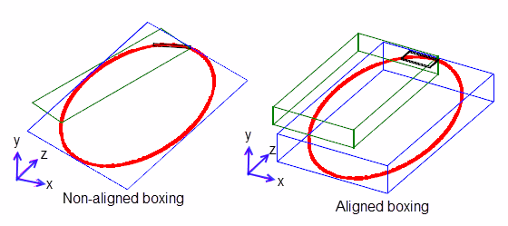Figure 27-2 Non-aligned boxing vs. aligned boxing
Parasolid provides the following functions for finding boxes:
|
Returns a suitable non-axis aligned box that surrounds a portion of a curve. |
|
|
Returns a non axis-aligned box that surrounds a given lattice. You can optionally pass in an axis to align the box to using one of the following combination of options:
If both |
|
|
Returns a suitable axis-aligned box that surrounds either the received topologies themselves or the transformations of the topologies. Transformations can be supplied via
For more information on scaling factors and modelling with parts created at different scales, see Chapter 23, “Distant and Multi-scale Modelling”. See the PK Interface Programming Reference Manual for more information on this function. |
|
|
Returns a suitable non axis-aligned box that surrounds the received topologies. You can optionally pass in an axis to align the box to, using one of the following combination of options:
If both
quality
option to PK_NABOX_quality_improved_c. See PK_TOPOL_find_nabox_o_t for more information.If Parasolid calculates the axis, PK_TOPOL_find_nabox will not return a box whose dimensionality or amount is greater than the equivalent axis-aligned box. In addition, the returned
ref_direction
always contains the longest dimension of the box.You can optionally choose to:
See the PK Interface Programming Reference Manual for more information on this function. |
|
Note: PK_CURVE_find_non_aligned_box, PK_SURF_find_non_aligned_box,PK_CURVE_find_box and PK_SURF_find_box let you specify a parameter range within the curve or surface to be boxed. This lets you work with defined sub-regions rather than whole curves or surfaces, as illustrated in
Figure 27-2. |
Parasolid has two functions that can be used to find the parameter box (or uvbox) of a face:
|
Note: If you require consistent results from repeated calls to PK_FACE_find_uvbox on the same face, we recommend you call PK_FACE_is_uvbox before every call to PK_FACE_find_uvbox. |
PK_FACE_is_uvbox determines whether a given face is parametrically rectangular. If the face is rectangular the u and v parameters returned lie in the parameter range of the surface given by PK_SURF_ask_uvbox unless the corresponding parameter is periodic. When the parameter is periodic the first parameter of the face lies in the range and the difference between the two parameters does not exceed the period, i.e. the face straddles the boundary of a periodic parameter.
PK_FACE_find_uvbox can locate a uvbox which bounds the given face in the parameter space of the face’s surface. Calling PK_SURF_ask_uvbox returns information about the range of values that the parameters u and v can have. A particular face on a surface may be restricted to a smaller range of values. PK_FACE_find_uvbox returns ranges in u and v such that for every point on the face, there is a u, v pair in this range which maps to that point.
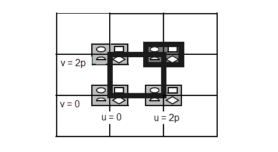The shaded lines represent two possible parameter boxes. The larger box is the one that would include the u,v pairs as returned by PK_SURF_parameterise_vector. The smaller box is the one which is actually returned by PK_FACE_find_uvbox.
In addition, you can use PK_FIN_find_uvbox to find a uvbox which bounds the given fin in the parameter space of the fin’s owning face’s surface.
|
To compute the parameter interval of the curve, to which the edge/fin corresponds |
|
PK_BODY_find_extreme receives a body and three directions, specified as vectors. The function looks for the furthest point on the body in the first direction specified. If there are several points that are furthest in this direction, then the second, and subsequently (if necessary) the third direction, is used to reduce the number of extreme points until only one remains, which is returned by the function.
This process is illustrated in Figure 27-4, which shows how Parasolid finds the extreme point on a cube when the X, -Y, and Z directions are passed to PK_BODY_find_extreme respectively.
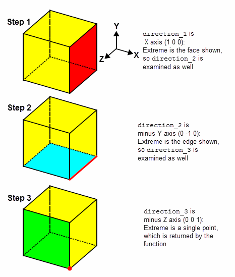Figure 27-4 Finding the extreme point in a body
In addition, these functions return the unique topological entity of lowest dimensionality belonging to the entity which coincides or contains the point.
|
Note: Sometimes, a valid derivative vector that combines a direction with a magnitude (such as a first derivative near a singularity) may be considered zero by PK_VECTOR_is_zero. In such cases, you should create a unit vector from the derivative vector using PK_VECTOR_normalise. |
|
Note: Transformations can only be compared if they do not contain non-uniform scaling or perspective terms. |
You can determine whether a face is periodic in a particular parameter direction using the function PK_FACE_is_periodic. This function receives a face, and returns two values that describe the periodicity of the face in the u and v parameters, respectively.
You can use PK_FACE_is_coincident to determine whether or not two faces, either of which may optionally have been transformed, are coincident within a given tolerance. This function receives the following arguments:
face1, face2 |
|
tol |
A tolerance within which the faces should be considered coincident |
options |
And returns the following arguments:
result |
|
point |
A point at which |
For
face1
and
face2
to be considered coincident, both of the following must be true:
If either of these is not true, then the two faces are not coincident.
These restrictions can sometimes mean that faces will not be considered coincident, even when you might expect that they would. For example, consider Figure 27-5, which shows two very similar faces, labeled A and B. The only difference between these faces is that B contains a gap that is smaller than the specified tolerance. However, despite its small size, this gap means that the loops in A and B no longer correspond, and so PK_FACE_is_coincident would not find these faces to be coincident.
PK_FACE_is_coincident may not detect coincidence between faces whose edges are all shorter than the specified tolerance.
Although PK_FACE_is_coincident may fail to find coincidence, it is guaranteed not to find coincidence where there is none.
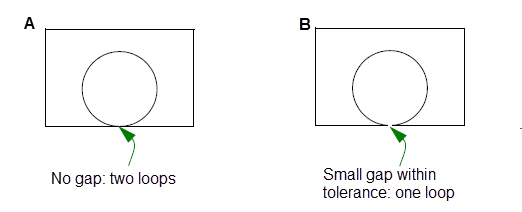Figure 27-5 Faces with dissimilar loops are not considered coincident
The information returned in
result
can be one of the following:
If a curve or surface has any discontinuities, you can find details of those discontinuities using the functions PK_CURVE_find_discontinuity and PK_SURF_find_discontinuity. These functions can identify analytic or geometric discontinuities of levels 1 through 3.
Both functions contain options to let you specify:
Note: PK_continuity_g3_c cannot be used in the
level
option of PK_CURVE_find_discontinuity or PK_SURF_find_discontinuity. If a value for this is set, PK_ERROR_not_implemented will be returned. |
If a curve or surface is self-intersecting, you can find details about each self-intersection using the functions PK_CURVE_find_self_int and PK_SURF_find_self_int. These functions receive a curve or surface as appropriate, and return a structure that contains the number of self-intersections found, together with details about each self-intersection.
For each self-intersection found, the following information is returned:
This information can then be passed directly to PK_CURVE_fix_self_int or PK_SURF_fix_self_int (as appropriate), for repairing. See Section 91.4.6, “Repairing the data”, for more information.
Parasolid can distinguish between three different types of self-intersection:
|
Note: Self-intersections in curves are always classified as general. |
If a surface or a curve contains degeneracies, you can find details about each degeneracy using the functions PK_SURF_find_degens and PK_CURVE_find_degens. These functions receive a surface or a curve respectively, and return a structure that contains the number of degeneracies found, together with details about each degeneracy.
|
Note: This functionality does not support facet geometry. |
For an example of this functionality, see the code example in the
C++\Code Examples\Inquiries\Model
Analysis\FindAndFixDegeneracies
folder, located in
example_applications
in your Parasolid installation folder.
For each surface degeneracy found, the following information is returned:
For each curve degeneracy found, the following information is returned:
This information can then be passed directly to PK_SURF_fix_degens and PK_CURVE_fix_degens for repairing. See Section 91.4.6, “Repairing the data”, for more information.
Parasolid can distinguish between five different types of surface degeneracy:
Parasolid can distinguish between three different types of curve degeneracy:
PK_BODY_identify_general can identify any characteristics of a body that cause it to be general. This can help you to clean up any non-manifold, cellular, or mixed-dimension entities in a general body, prior to making it manifold. See Section 15.11, “Identifying general characteristics of a body”, for more information.
You can use PK_EDGE_ask_convexity to return the convexity of an edge. The function takes an edge, and an options structure, and returns a convexity value (PK_EDGE_convexity_t).
This function can identify the following convexities (in each example, the edge whose convexity is returned is shown in red, and the face normals are shown in blue):
|
Value of PK_EDGE_convexity_t |
||
|---|---|---|
| 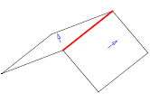 | ||
| 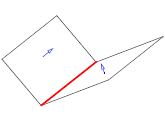 | ||
| 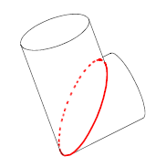 | ||
|
smooth flat |
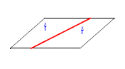 | |
|
smooth convex |
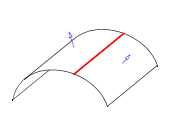 | |
|
smooth concave |
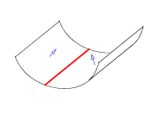 | |
|
smooth inflection |
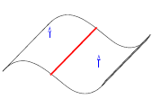 | |
|
edge convexity is smooth, some parts are smooth convex, some parts are smooth concave |
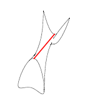 | |
|
knife convex |
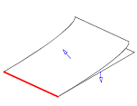 | |
|
knife concave |
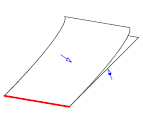 |
You can set an angular tolerance to use when identifying convexities using the
have_angular_tolerance
and
angular_tolerance
options in the options structure.
You can find position vectors along a curve subject to measurements in 3-space using PK_CURVE_find_vectors. This function receives a curve and a parameter interval to return an array of positions and corresponding parameters on the curve defined by a choice of measuring methods that are based on either a distance or ratio. These measuring methods can be controlled using the
measurement_method
option which takes the following values:
|
A position vector corresponding to the distance along the curve. See “Finding vectors using distance along the curve” for more information. |
|
|
All position vectors that lie at the intersections of the curve and a plane orthogonal to the chord. See “Finding vectors using distance along the chord” for more information. |
|
|
A position vector that corresponds to the ratio of distances along the curve. See “Finding vectors using the ratio of distances along the curve” for more information. |
|
|
All position vectors that lie at the intersections of the curve and a plane orthogonal to the chord as measured using a ratio. See “Finding vectors using ratio of distances along chord length” for more information. |
|
|
All position vectors on the curve that satisfies the supplied two chords ratio measurement. See “Finding vectors using ratios of two chords” for more information. |
Figure 27-6 Finding vectors using distance along the curve
Using the distance A along the curve as an input measurement, one position vector is returned as shown in Figure 27-6. This position vector corresponds to the given distance of the curve.
Figure 27-7 Finding vectors using distance along the chord
As shown in Figure 27-7, when a distance A is used as an input measurement, multiple position vectors are returned once they lie on the curve between the start and end points and lie in the plane which is orthogonal to the chord that is located at the given distance A from the start point.
Figure 27-8 Finding vectors using the ratio of distances along the curve
When the ratio of total distances along the curve is used as an input measurement, one position vector is returned as shown in
Figure 27-8. The ratio is calculated as the length A divided by the bounded length B of the curve. For example, to return a vector halfway along the curve
measurements
need to be given a value of 0.5.
Figure 27-9 Finding vectors using ratio of distances along chord length
Using the ratio of the total chord length B as an input measurement, multiple position vectors are returned once they lie on the curve between the start and end points and lie in the plane which is orthogonal to the chord that is located at the given distance from the start point. This is shown in
Figure 27-9 where the ratio is calculated as the length A divided by the bounded length of the chord B. For example, to return a vector halfway along the chord
measurements
need to be given a value of 0.5.
Figure 27-10 Finding vectors using ratio of two chords
Using the ratio of two chords as an input measurement, all position vectors that lie on the curve between the start and end points and satisfy the two chord ratio condition A/(A+B), where A is the length of the first chord and B is the length of the second chord, are returned. The ratio measurement is calculated as A/(A+B). This is illustrated in Figure 27-10.
|
Note: A single two chord ratio measurement may yield multiple solutions. |
|
|
You can find the position vectors on a given surface using PK_SURF_find_vectors. This function receives a
surface
and two pairs of uv parameters (
uv_start
,
uv_end
) that mark the start and end of the path curve respectively. A path curve is a bounded curve that lies on
surface
between
uv_start
,
uv_end
on which all returned position vectors lie. This is shown in
Figure 27-11.
Figure 27-11 Finding position vectors along a curved surface
PK_SURF_find_vectors take the following options:
|
Distance or ratios of distances measured in 3-dimensional space. |
|
|
Indicates what the values in |
|
|
The type of curve used to define the path curve. See Section 27.6.13.1, “Defining the path curve” for more information. |
|
|
Whether a position vector is supplied to help find the path curve. See Section 27.6.13.1, “Defining the path curve” for more information. |
|
|
A position vector to help find the path curve. Note: This option is only available if
curve_type
is PK_SURF_curve_linear_sp_c. |
|
|
Whether a projection direction vector is supplied. See Section 27.6.13.1, “Defining the path curve” for more information. |
|
|
A vector indicating the direction of the projection. Note: This option is only available if
curve_type
is PK_SURF_curve_vec_proj_c. |
|
|
When an error indicating failure should be returned. Default: PK_ERROR_on_fail_no_c. |
You can choose the type of curve used to define the path curve using the
curve_type
option. This takes the following values:
|
The path curve is a projected image of the chord between |
|
If
curve_type
is set to PK_SURF_curve_vec_proj_c and
have_proj_direction
is:
uv_start
and
uv_end
is projected in the direction of
proj_direction
.
uv_start
and
uv_end
.
If
curve_type
is set to PK_SURF_curve_linear_sp_c, and there is ambiguity on the definition of the path curve (for example periodic surfaces) you can set the
have_help_point
option to PK_LOGICAL_true, thereby allowing PK_SURF_find_vectors to use the nearest path curve to the help point. Otherwise, the path curve will be the curve segment with shortest bounded length.
| <<< Introduction To Model Interrogation | Chapters | Mass Properties >>> |